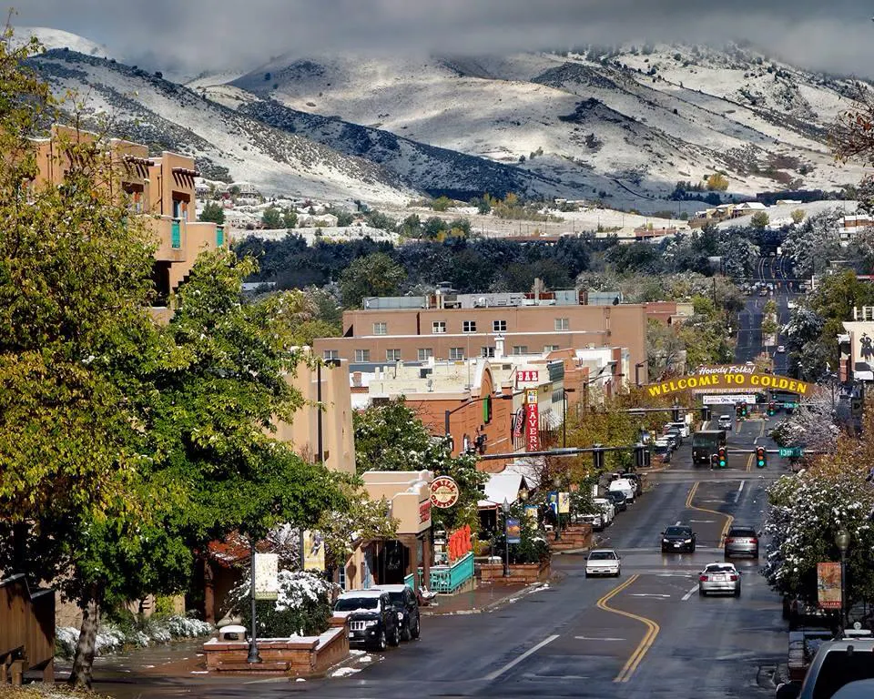

Golden
City Overview
Golden is a city on the outskirts of Denver and nested up against the front range of the Rocky Mountains. Golden is well known for its history as an old mining town and famously as the home of the Coors Brewery. With a population of only 20,399 people (Bureau, Golden City, Colorado 2022), Golden is much smaller than Denver, which is a lot more indicative of the mountain town feel that is common around Colorado. Golden is a perfect place to give visitors, and residents access to many different areas of the state, depending on what activities people are interested in. Golden is close to Denver and Boulder, great cities to take in city life, but also very close to many great outdoor areas and mountains. This city's history is one of the foremost gold mining towns that popped up when settlers first came to this region during the gold rush. Golden was the first capital city for the Colorado territory when it settled in 1859 (CVB, Golden, Co 2024). Many people will live in Golden and the surrounding area to attend the Colorado School of Mines, which has had its home in Golden since 1870.
Source: United States Census Bureau
Source: visitgolden.com
Region and Economy
Golden is a lovely suburban area located just outside of Denver and nestled up against the front range area of the Rocky Mountains. The wonderful views of the foothills as well as the surrounding mountain areas that include Lookout Mountain and north Table Mountain is some of the best in the area. Due to its proximity, Golden's economy includes many graduates from the School of Mines who work in the engineering industry. The medium income, therefore, is pretty high at $90,990 (Bureau, Golden City, Colorado 2022) and is actually above the state average income of $89,302 (Bureau, State of Colorado 2022). Golden is considered high for living expense in the area, but it is not uncommon to see this beautiful area.
Source: United States Census Bureau
Tourism and Activities
One of the things that makes Golden such a good place to be is that there are many things to do and see in and around the city. With its proximity to the Rocky Mountains and Table Mountains, there are a lot of great outdoor areas to see. From great hikes to golf, outdoor sports, or general sightseeing, there is something for everyone here. The dining scene is also well-established in this small city. Whether you are looking for something casual or trying to have a memorable fine dining experience there is something for every type of person. The big attraction that most will want to take advantage of is the Coors Brewery located in Golden (Golden, Colorado, Welcome to Coors Brewery Tour 2024). This iconic brewery is one of the largest beer producers in the United States, and no trip to Golden would be complete without paying a visit to this gem of Colorado's history.
Source: visitgolden.com
Source: coorsbrewerytour.com